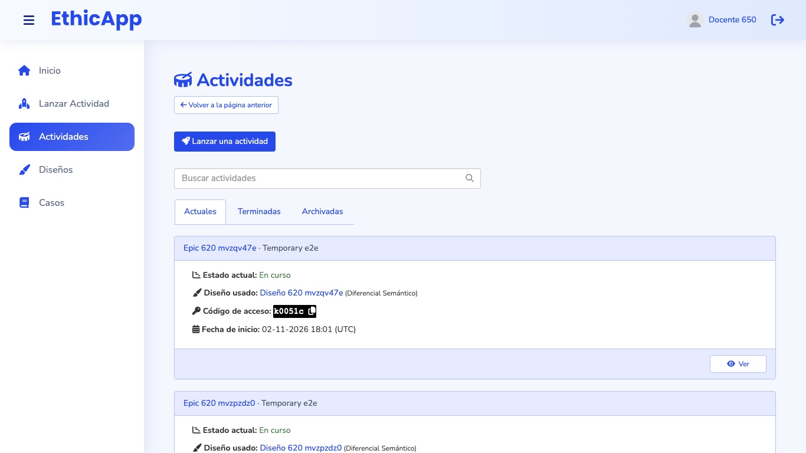
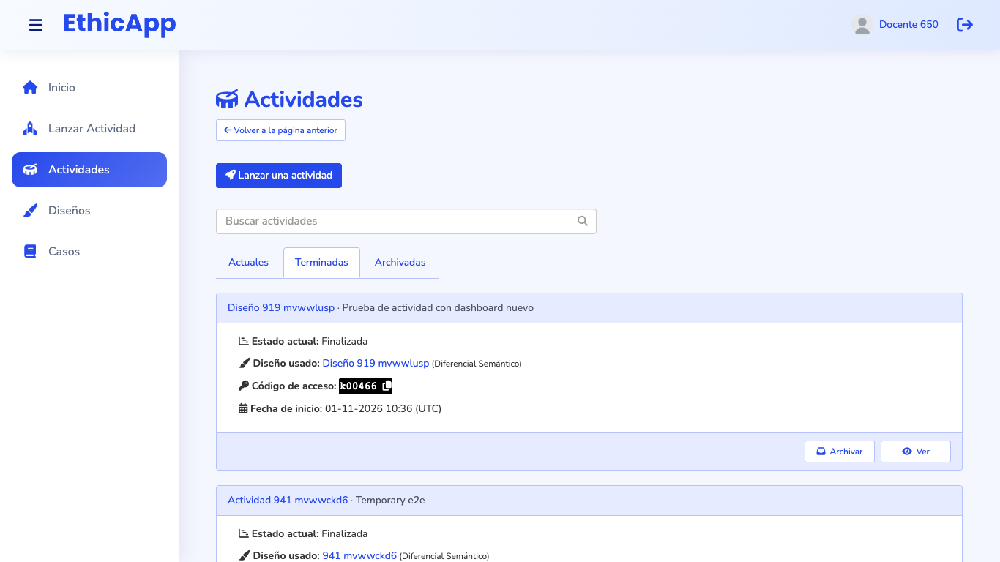
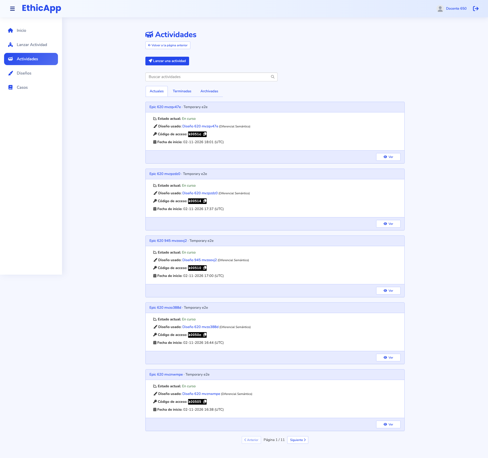

Low fidelity. The proposal brings the teacher's list of activities into the design language of Diseños (epic #966) and Casos (epic #1008): a role line, tabs with counts, a table with one status column and one visible action per row, a row menu and action notices. Each frame is drawn at its real viewport size and scaled down; the dashed line is the fold. Labels are in Spanish, as a teacher sees them in es-CL. Titles, cases and people are fictional.
fold (bottom of the viewport)numbered notes, explained under each frame
Where Actividades sits
An activity is a design launched with a group of students. Lanzar actividad starts one; the activity dashboard (docs/design/teacher-activity-dashboard, implemented) runs it; this page finds it again, before, during and after.
Actividades (this proposal)
Activity dashboard
Job
Find an activity, see where each one stands, hand out its code, get to its reports, archive the finished ones.
Run one activity: start phases, follow the responses, end it.
What a row says
Its status (Sin iniciar, the phase and its mode, or Finalizada); how many students joined; the access code while it runs; when it was launched or ended.
Everything about one activity.
Primary action
"Lanzar actividad"; per row "Abrir panel" (en curso) or "Reportes" (terminadas); "Restaurar" (archivadas).
"Iniciar fase siguiente", "Terminar actividad", "Reportes".
Bridge
The role line links to Lanzar actividad; "Lanzar de nuevo" opens the wizard with the same design.
The browser's back button returns to the list with its tab and filters, which live in the URL.
Decisions, 2026-11-03 (see the README):
An activity's end time is recorded (sessions.finished_at), and Terminadas shows it.
Rows show the status and the participants; there is no response count.
Only a finished activity can be archived, in the page and in the server.
Archiving changes nothing for students: a finished activity and an archived one look the same to them.
Today

1366 × 768, first screen ("Actuales"): one 243 px card, with its five lines and "Ver" alone in the footer.

"Terminadas": the same card, with "Archivar" and "Ver". The reports are one page further, inside the dashboard.

1920 × 1080, whole page: five cards per page, 11 pages for 53 current activities.
A. 1920 × 1080: activities in progress
The page says what it is for: "Sigue tus actividades, comparte su código con los estudiantes y revisa sus reportes. ¿Necesitas otra propuesta? Prepara un diseño →". The link leads to Diseños, since "Lanzar actividad" is already the page action. "Volver a la página anterior" goes away.
One page action: "🚀 Lanzar actividad", top right, as "+ Nuevo diseño" and "+ Nuevo caso".
Tabs with counts: "En curso", "Terminadas", "Archivadas" (today "Actuales", "Terminadas", "Archivadas"). Tab and filters are part of the URL.
Filters: search over the activity's name and description, its design, its case and its code; chips "Todas", "Sin iniciar · 9" and "Con fase en curso". The order is stated.
One table row per activity:
Actividad: the name and, after "·", the description the teacher gave at launch (#973); under it the case, and the design only when the activity was renamed at launch. A click on the name opens the dashboard.
Estado: "○ Sin iniciar" while no phase has started, or "● Fase 2 de 3 · Grupal", the same words as the dashboard's bar. "IA" marks an activity with AI services on.
Estudiantes: how many joined.
Código: the access code, copied with one click, as students are told to type it.
Lanzada: in the teacher's time zone ("hoy, 18:01", "ayer", "12 oct."), instead of today's "02-11-2026 18:01 (UTC)".
One visible action per row: "Abrir panel", the dashboard.
The row menu (open on the third row): Copiar código, Reportes, Ver diseño, Ver caso. Ending an activity stays in the dashboard, behind its hold-to-confirm button.
B. 1366 × 768: finished activities, after archiving one
"Reportes" is the visible action of a finished activity: it opens the reports page directly, one click instead of two.
Columns for a finished activity: its status, the students who took part, and when it ended (sessions.finished_at). An activity finished before the end time was recorded shows "—". The code column goes away.
The row menu: Abrir panel, Lanzar de nuevo (the wizard on this design, #!/activities/new/:designId), Ver diseño, Archivar.
After archiving, a notice names the activity and offers "Deshacer". Today the card disappears without a word. Students see nothing different, so the notice does not mention them.
C. 1366 × 768: activities that have not started
The "Sin iniciar" filter is on. These activities were launched, but no phase has started: their students can join and wait. Today they mix with the running ones under "Actuales", with the same "En curso" look.
The code is the point of these rows: the teacher shows it to the students before starting phase 1. The visible action stays "Abrir panel", where phase 1 starts.
The footer reminds what the tab holds and how to archive: an activity can be archived once it is finished.
D. 1024 × 768: one column
Below 1200 px the app's menu folds, the role line wraps under the title, and "Lanzar actividad" stays at the top right.
The table becomes compact rows: name and design, then status, students, code and the actions on a second line.
E. 1366 × 768: a teacher with no activities yet
The empty page explains the path in the order a teacher follows it: a design, then a launch. Each step is a link, and the first one is skipped when the teacher already has designs ready.